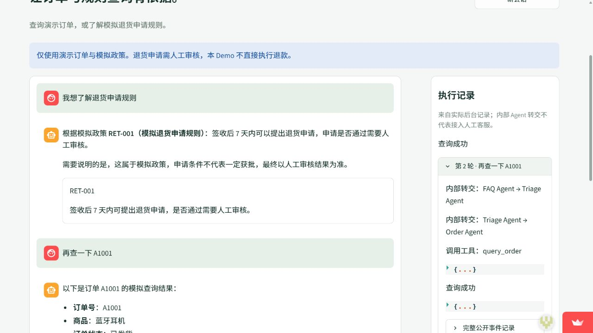
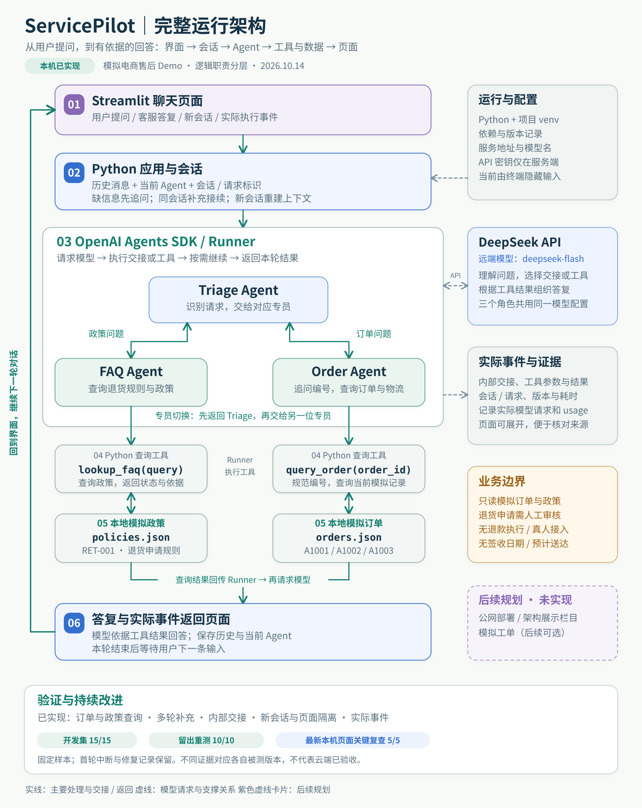

ServicePilot｜项目主线与验收
明确阶段目标、需求与验收范围，串联学习和开发；解释 venv、模型请求、工具与 handoff，制作复盘/架构，整理面试与简历表述。
下一步：在这里逐环节学习、复述与纠偏；区分已完成交付、当前可用性、未来升级。
核心功能、浅色工作台与公开部署已有交付证据。当前应优先确认故障后的实际可用性、补齐演示收尾，再逐步学习实现细节。
按“所有 PRD 扩展项均实现”或“生产级电商系统”衡量：还没有。模拟工单、单/多 Agent 对比及真实业务系统连接都没有完成，也不需要作为首版学习结束的前置条件。
| 层面 | 核对到的事实 | 结论 |
|---|---|---|
| 核心业务 | 订单/政策查询、缺信息追问、多轮补充、角色切换、错误状态区分、新会话隔离。 | 首版已实现 |
| 界面与公开展示 | 客服体验、架构总览、图文项目介绍；公开 Streamlit 应用，390px展示检查与用户手机查询确认。 | 已交付 |
| 案例验证 | 历史冻结版开发15/15、留出第二轮重测10/10；新发布云端另有关键场景5/5。 | 有范围的结果 |
| 当前实际可用性 | 10月15日两次问答失败；10月16日已有本机最小真实回归2/2，当前发布版云端最小问答尚待新记录。新版展示由用户确认。 | 云端问答待确认 |
| 个人学习与交付 | 第一天复盘、架构、简历与演示脚本已准备；后续知识未逐项验收，录屏未确认完成。 | 当前重点 |
旧部署结果证明当时通过；官方恢复公告证明供应商宣布恢复。两者都不能替代本项目此刻的实际问答验证。
明确阶段目标、需求与验收范围，串联学习和开发；解释 venv、模型请求、工具与 handoff，制作复盘/架构，整理面试与简历表述。
下一步：在这里逐环节学习、复述与纠偏；区分已完成交付、当前可用性、未来升级。
将航空示例改造成模拟售后业务，形成订单与政策工具、会话管理、页面及案例验证；修复证据保存异常并保留失败/复测记录，准备交付文档。
下一步：仅在定位到实际缺陷或明确新需求时继续开发，无需每天追加功能。
沿用户确认的首版浅色工作台完善三栏与状态；最新交接还实际完成了产品接入、公开部署、必要云端检查和移动端展示检查。
下一步：当前风格已确定。后续改版应由明确的体验问题推动，不重新选模板。
已建立按需使用的排查约定；该对话没有新的具体故障修复交付。昨天的API失败分析记录在主线中，不归算为专项对话已完成修复。
下一步：若恢复后仍能复现故障，再携带准确错误和事件进入；当前不空转排查。
① 更全面的云端回归、长会话、并发和稳定性测试。
② 同模型、同工具、同案例的单/多 Agent 对照实验。
③ 用户确认后创建模拟工单，并在工具层校验权限与去重。
④ 根据真实反馈调整界面或数据来源。
以能解释“为什么、由谁做、依据什么、失败怎么办”为标准。每单元先用一个真实问题或已保存记录观察，再看相关代码；复述通过后再进入下一单元。
能讲清订单查询、政策咨询与模拟业务边界，并说明为什么先做这两类能力。
不能。当前工具提供查询事实，没有退款执行、工单创建或接通人工的能力。“需人工审核”是规则和权限说明，不代表系统已提交审核。
能指出每一步是谁执行的，区分模型推理、SDK执行、本地查询和界面显示。
对应：app.py → web_runtime.py → session.py → agent_config.py → order_tools.py → orders.json
业务事实来自本次工具查询。模型依据工具结果组织语言；没有到货日期就不能推算。页面也不自行生成订单事实。
理解同一DeepSeek模型可以使用不同角色说明与工具配置；Runner执行交接，handoff不是转真人。
对应：agent_config.py、model_config.py、session.py
常见路径为：①Triage判断并提出交给Order；②Order提出query_order调用；③Order拿到工具结果后生成答复。本地执行函数和SDK执行交接本身不各算一次模型请求。实际次数看运行记录，不能按图中经过几个方框固定计数。
理解Python函数、参数、结构化返回值与Agent的tools配置；区别工具事实和模型回答。
对应：order_tools.py、faq_tools.py、order_data.py、faq_data.py
不是。程序把可用工具及参数说明提供给模型，模型输出工具调用请求，Runner执行相应Python函数。用户页面的示例按钮只负责填入问题。
理解历史消息、当前Agent和新会话重置；能解释FAQ→Triage→Order的切换过程。
新会话从Triage开始。同一会话后续从上一轮最后的Agent继续，并携带历史。任务变化时按已配置的handoff路径转交，不是按固定源码行号随意跳转。
分清invalid_input、not_found、no_match、unavailable和模型API异常，并根据最后事件定位失败阶段。
不是。它表示调用接口时出现5xx服务端错误，尚未拿到可用的最终答复；业务“政策未收录”则是工具正常返回no_match。未知原因不能直接归为密钥错误。
能解释开发集与留出集、首轮中断与重测，区分用户轮次、模型请求和token；知道结果必须对应版本与案例范围。
不能。这里是公开划分的小样本、第二轮重测结果；首轮因保存异常中断，且并非外部盲评。也没有证据证明多Agent优于单Agent。历史本地25条和当前云端5项不能互相替代。
能解释设计样例和真实调用、localhost和云端、GitHub源码和Streamlit运行环境，以及API密钥为何配置在服务端。
对应：deployment.py、README、发布交接、个人贡献
按真实参与讲需求审阅、范围和验收确认、界面反馈、运行配合及学习过程；实现、验证和文档由Codex协助，Runner等机制由官方SDK提供。可逐步补充自己确实能解释和独立操作的部分，不把未验证经历写进简历。
每轮只讲一个环节。流程固定为：看一个实际例子 → 指出对应代码/资料 → 用白话解释 → 你复述 → 纠正误解 → 更新进度。以学习为目的时，不修改代码、不额外调用API；使用已保存记录即可继续。
后续升级放在这轮学习和必要交付之后。你可以做一个小改动练习，例如增加一条模拟政策，先预测它影响哪些模块与案例，再最小修改并验证；没有学习目标时不为“继续推进”而扩功能。


第一天：环境、航空基线与概念复盘 · 90秒脚本、简历与面试问答 · 公网发布证据与限制 · 共享看板
实际应用：ServicePilot 公网工作台
本页依据2026-10-16读取的四个对话与项目文档整理；没有新增业务API测试，没有将查看公告、制作复盘或准备脚本计为产品验证通过。